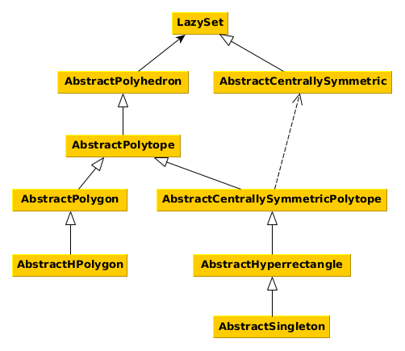

Set Interfaces
This section of the manual describes the interfaces for different set types. Every set that fits the description of an interface should also implement it. This helps in several ways:
- avoid code duplicates,
- provide functions for many sets at once,
- allow changes in the source code without changing the API.
The interface functions are outlined in the interface documentation. See Common Set Representations for implementations of the interfaces.
The naming convention is such that all interface names (with the exception of the main abstract type LazySet) should be preceded by Abstract.
The following diagram shows the interface hierarchy.

LazySet
Every convex set in this library implements this interface.
LazySets.LazySet — Type.LazySet{N}Abstract type for convex sets, i.e., sets characterized by a (possibly infinite) intersection of halfspaces, or equivalently, sets $S$ such that for any two elements $x, y ∈ S$ and $0 ≤ λ ≤ 1$ it holds that $λ·x + (1-λ)·y ∈ S$.
Notes
LazySet types should be parameterized with a type N, typically N<:Real, for using different numeric types.
Every concrete LazySet must define the following functions:
σ(d::AbstractVector{N}, S::LazySet{N}) where {N<:Real}– the support vector ofSin a given directiond; note that the numeric typeNofdandSmust be identical; for some set typesNmay be more restrictive thanRealdim(S::LazySet)::Int– the ambient dimension ofS
julia> subtypes(LazySet)
15-element Array{Any,1}:
AbstractCentrallySymmetric
AbstractPolyhedron
CacheMinkowskiSum
CartesianProduct
CartesianProductArray
ConvexHull
ConvexHullArray
EmptySet
ExponentialMap
ExponentialProjectionMap
Intersection
IntersectionArray
LinearMap
MinkowskiSum
MinkowskiSumArraySupport function and support vector
Every LazySet type must define a function σ to compute the support vector.
LazySets.support_vector — Function.support_vectorAlias for the support vector σ.
LazySets.ρ — Method.ρ(d::AbstractVector{N}, S::LazySet{N})::N where {N<:Real}Evaluate the support function of a set in a given direction.
Input
d– directionS– convex set
Output
The support function of the set S for the direction d.
Notes
The numeric type of the direction and the set must be identical.
LazySets.support_function — Function.support_functionAlias for the support function ρ.
LazySets.σ — Function.σFunction to compute the support vector σ.
Other globally defined set functions
LinearAlgebra.norm — Function.norm(S::LazySet, [p]::Real=Inf)Return the norm of a convex set. It is the norm of the enclosing ball (of the given $p$-norm) of minimal volume that is centered in the origin.
Input
S– convex setp– (optional, default:Inf) norm
Output
A real number representing the norm.
LazySets.radius — Function.radius(S::LazySet, [p]::Real=Inf)Return the radius of a convex set. It is the radius of the enclosing ball (of the given $p$-norm) of minimal volume with the same center.
Input
S– convex setp– (optional, default:Inf) norm
Output
A real number representing the radius.
LazySets.diameter — Function.diameter(S::LazySet, [p]::Real=Inf)Return the diameter of a convex set. It is the maximum distance between any two elements of the set, or, equivalently, the diameter of the enclosing ball (of the given $p$-norm) of minimal volume with the same center.
Input
S– convex setp– (optional, default:Inf) norm
Output
A real number representing the diameter.
LazySets.isbounded — Method.isbounded(S::LazySet)::BoolDetermine whether a set is bounded.
Input
S– set
Output
true iff the set is bounded.
Algorithm
We check boundedness via isbounded_unit_dimensions.
LazySets.isbounded_unit_dimensions — Method.isbounded_unit_dimensions(S::LazySet{N})::Bool where {N<:Real}Determine whether a set is bounded in each unit dimension.
Input
S– set
Output
true iff the set is bounded in each unit dimension.
Algorithm
This function performs $2n$ support function checks, where $n$ is the ambient dimension of S.
LazySets.an_element — Method.an_element(S::LazySet{N}) where {N<:Real}Return some element of a convex set.
Input
S– convex set
Output
An element of a convex set.
RecipesBase.apply_recipe — Method.plot_lazyset(S::LazySet; ...)Plot a convex set in two dimensions using an axis-aligned approximation.
Input
S– convex set
Examples
julia> using Plots, LazySets
julia> B = BallInf(ones(2), 0.1);
julia> plot(2.0 * B);
Algorithm
For any 2D lazy set we compute its box overapproximation, followed by the list of vertices. A post-processing convex_hull is applied to the vertices list; this ensures that the shaded area inside the convex hull of the vertices is covered correctly.
Notes
This recipe detects if the axis-aligned approximation is such that the first two vertices returned by vertices_list are the same. In that case, a scatter plot is used (instead of a shape plot). This use case arises, for example, when plotting singletons.
RecipesBase.apply_recipe — Method.plot_lazyset(Xk::Vector{S}) where {S<:LazySet}Plot an array of convex sets in two dimensions using an axis-aligned approximation.
Input
Xk– array of convex sets
Examples
julia> using Plots, LazySets;
julia> B1 = BallInf(zeros(2), 0.4);
julia> B2 = BallInf(ones(2), 0.4);
julia> plot([B1, B2]);
Algorithm
For each 2D lazy set in the array we compute its box overapproximation, followed by the list of vertices. A post-processing convex_hull is applied to the vertices list; this ensures that the shaded area inside the convex hull of the vertices is covered correctly.
RecipesBase.apply_recipe — Method.plot_lazyset(S::LazySet, ε::Float64; ...)Plot a lazy set in two dimensions using iterative refinement.
Input
S– convex setε– approximation error bound
Examples
julia> using Plots, LazySets;
julia> B = BallInf(ones(2), 0.1);
julia> plot(randn(2, 2) * B, 1e-3);
RecipesBase.apply_recipe — Method.plot_lazyset(Xk::Vector{S}, ε::Float64; ...) where {S<:LazySet}Plot an array of lazy sets in two dimensions using iterative refinement.
Input
Xk– array of convex setsε– approximation error bound
Examples
julia> using Plots, LazySets;
julia> B1 = BallInf(zeros(2), 0.4);
julia> B2 = Ball2(ones(2), 0.4);
julia> plot([B1, B2], 1e-4);
LazySets.tosimplehrep — Method.tosimplehrep(S::LazySet)Return the simple H-representation $Ax ≤ b$ of a set from its list of linear constraints.
Input
S– set
Output
The tuple (A, b) where A is the matrix of normal directions and b is the vector of offsets.
Notes
This function only works for sets that can be represented exactly by a finite list of linear constraints. This fallback implementation relies on constraints_list(S).
Set functions that override Base functions
Base.:== — Method.==(X::LazySet, Y::LazySet)Return whether two LazySets of the same type are exactly equal by recursively comparing their fields until a mismatch is found.
Input
X– anyLazySetY– anotherLazySetof the same type asX
Output
trueiffXis equal toY.
Notes
The check is purely syntactic and the sets need to have the same base type. I.e. X::VPolytope == Y::HPolytope returns false even if X and Y represent the same polytope. However X::HPolytope{Int64} == Y::HPolytope{Float64} is a valid comparison.
Examples
julia> HalfSpace([1], 1) == HalfSpace([1], 1)
true
julia> HalfSpace([1], 1) == HalfSpace([1.0], 1.0)
true
julia> Ball1([0.], 1.) == Ball2([0.], 1.)
falseBase.copy — Method.copy(S::LazySet)Return a deep copy of the given set by copying its values recursively.
Input
S– anyLazySet
Output
A copy of S.
Notes
This function performs a deepcopy of each field in S, resulting in a completely independent object. See the documentation of ?deepcopy for further details.
Aliases for set types
LazySets.CompactSet — Constant.CompactSetAn alias for compact set types.
Notes
Most lazy operations are not captured by this alias because whether their result is compact or not depends on the argument(s).
LazySets.NonCompactSet — Constant.NonCompactSetAn alias for non-compact set types.
Notes
Most lazy operations are not captured by this alias because whether their result is non-compact or not depends on the argument(s).
Centrally symmetric set
Centrally symmetric sets such as balls of different norms are characterized by a center. Note that there is a special interface combination Centrally symmetric polytope.
AbstractCentrallySymmetric{N<:Real} <: LazySet{N}Abstract type for centrally symmetric sets.
Notes
Every concrete AbstractCentrallySymmetric must define the following functions:
center(::AbstractCentrallySymmetric{N})::Vector{N}– return the center point
julia> subtypes(AbstractCentrallySymmetric)
3-element Array{Any,1}:
Ball2
Ballp
EllipsoidThis interface defines the following functions:
LazySets.dim — Method.dim(S::AbstractCentrallySymmetric)::IntReturn the ambient dimension of a centrally symmetric set.
Input
S– set
Output
The ambient dimension of the set.
LazySets.isbounded — Method.isbounded(S::AbstractCentrallySymmetric)::BoolDetermine whether a centrally symmetric set is bounded.
Input
S– centrally symmetric set
Output
true (since a set with a unique center must be bounded).
LazySets.an_element — Method.an_element(S::AbstractCentrallySymmetric{N})::Vector{N} where {N<:Real}Return some element of a centrally symmetric set.
Input
S– centrally symmetric set
Output
The center of the centrally symmetric set.
Base.isempty — Method.isempty(S::AbstractCentrallySymmetric)::BoolReturn if a centrally symmetric set is empty or not.
Input
S– centrally symmetric set
Output
false.
Polyhedron
A polyhedron has finitely many facets (H-representation) and is not necessarily bounded.
LazySets.AbstractPolyhedron — Type.AbstractPolyhedron{N<:Real} <: LazySet{N}Abstract type for polyhedral sets, i.e., sets with finitely many flat facets, or equivalently, sets defined as an intersection of a finite number of half-spaces.
Notes
Every concrete AbstractPolyhedron must define the following functions:
constraints_list(::AbstractPolyhedron{N})::Vector{LinearConstraint{N}}– return a list of all facet constraints
julia> subtypes(AbstractPolyhedron)
5-element Array{Any,1}:
AbstractPolytope
HPolyhedron
HalfSpace
Hyperplane
LineThis interface defines the following functions:
Base.:∈ — Method.∈(x::AbstractVector{N}, P::AbstractPolyhedron{N})::Bool where {N<:Real}Check whether a given point is contained in a polyhedron.
Input
x– point/vectorP– polyhedron
Output
true iff $x ∈ P$.
Algorithm
This implementation checks if the point lies inside each defining half-space.
LazySets.constrained_dimensions — Method.constrained_dimensions(P::AbstractPolyhedron{N})::Vector{Int}
where {N<:Real}Return the indices in which a polyhedron is constrained.
Input
P– polyhedron
Output
A vector of ascending indices i such that the polyhedron is constrained in dimension i.
Examples
A 2D polyhedron with constraint $x1 ≥ 0$ is constrained in dimension 1 only.
Polytope
A polytope is a bounded set with finitely many vertices (V-representation) resp. facets (H-representation). Note that there is a special interface combination Centrally symmetric polytope.
LazySets.AbstractPolytope — Type.AbstractPolytope{N<:Real} <: AbstractPolyhedron{N}Abstract type for polytopic sets, i.e., bounded sets with finitely many flat facets, or equivalently, bounded sets defined as an intersection of a finite number of half-spaces, or equivalently, bounded sets with finitely many vertices.
Notes
Every concrete AbstractPolytope must define the following functions:
constraints_list(::AbstractPolytope{N})::Vector{LinearConstraint{N}}– return a list of all facet constraintsvertices_list(::AbstractPolytope{N})::Vector{Vector{N}}– return a list of all vertices
julia> subtypes(AbstractPolytope)
4-element Array{Any,1}:
AbstractCentrallySymmetricPolytope
AbstractPolygon
HPolytope
VPolytopeThis interface defines the following functions:
LazySets.isbounded — Method.isbounded(P::AbstractPolytope)::BoolDetermine whether a polytopic set is bounded.
Input
P– polytopic set
Output
true (since a polytope must be bounded).
LazySets.singleton_list — Method.singleton_list(P::AbstractPolytope{N})::Vector{Singleton{N}} where {N<:Real}Return the vertices of a polytopic set as a list of singletons.
Input
P– polytopic set
Output
List containing a singleton for each vertex.
LazySets.linear_map — Method.linear_map(M::AbstractMatrix{N}, P::AbstractPolytope{N};
output_type::Type{<:LazySet}=VPolytope{N}) where {N<:Real}Concrete linear map of an abstract polytype.
Input
M– matrixP– abstract polytypeoutput_type– (optional, default:VPolytope) type of the result
Output
A set of type output_type.
Algorithm
The linear map $M$ is applied to each vertex of the given set $P$, obtaining a polytope in V-representation. Since some set representations (e.g. axis-aligned hyperrectangles) are not closed under linear maps, the default output is a VPolytope. If an output_type is given, the corresponding convert method is invoked.
Base.isempty — Method.isempty(P::AbstractPolytope)::BoolDetermine whether a polytope is empty.
Input
P– abstract polytope
Output
true if the given polytope contains no vertices, and false otherwise.
Algorithm
This algorithm checks whether the vertices_list of the given polytope is empty or not.
RecipesBase.apply_recipe — Method.plot_polygon(P::AbstractPolytope; ...)Plot a 2D polytope as the convex hull of its vertices.
Input
P– polygon or polytope
Examples
julia> using Plots, LazySets;
julia> P = HPolygon([LinearConstraint([1.0, 0.0], 0.6),
LinearConstraint([0.0, 1.0], 0.6),
LinearConstraint([-1.0, 0.0], -0.4),
LinearConstraint([0.0, -1.0], -0.4)]);
julia> plot(P);
This recipe also applies if the polygon is given in vertex representation:
julia> P = VPolygon([[0.6, 0.6], [0.4, 0.6], [0.4, 0.4], [0.6, 0.4]]);
julia> plot(P);
RecipesBase.apply_recipe — Method.plot_polytopes(Xk::Vector{S}; ...)Plot an array of 2D polytopes.
Input
Xk– array of polytopes
Examples
julia> using Plots, LazySets;
julia> P1 = HPolygon([LinearConstraint([1.0, 0.0], 0.6),
LinearConstraint([0.0, 1.0], 0.6),
LinearConstraint([-1.0, 0.0], -0.4),
LinearConstraint([0.0, -1.0], -0.4)]);
julia> P2 = HPolygon([LinearConstraint([2.0, 0.0], 0.6),
LinearConstraint([0.0, 2.0], 0.6),
LinearConstraint([-2.0, 0.0], -0.4),
LinearConstraint([0.0, -2.0], -0.4)]);
julia> plot([P1, P2]);
julia> P1 = VPolygon([[0.6, 0.6], [0.4, 0.6], [0.4, 0.4], [0.6, 0.4]]);
julia> P2 = VPolygon([[0.3, 0.3], [0.2, 0.3], [0.2, 0.2], [0.3, 0.2]]);
julia> plot([P1, P2]);
Notes
It is assumed that the given vector of polytopes is two-dimensional.
Polygon
A polygon is a two-dimensional polytope.
LazySets.AbstractPolygon — Type.AbstractPolygon{N<:Real} <: AbstractPolytope{N}Abstract type for polygons (i.e., 2D polytopes).
Notes
Every concrete AbstractPolygon must define the following functions:
tovrep(::AbstractPolygon{N})::VPolygon{N}– transform into V-representationtohrep(::AbstractPolygon{N})::S where {S<:AbstractHPolygon{N}}– transform into H-representation
julia> subtypes(AbstractPolygon)
2-element Array{Any,1}:
AbstractHPolygon
VPolygonThis interface defines the following functions:
LazySets.dim — Method.dim(P::AbstractPolygon)::IntReturn the ambient dimension of a polygon.
Input
P– polygon
Output
The ambient dimension of the polygon, which is 2.
LazySets.linear_map — Method.linear_map(M::AbstractMatrix{N}, P::AbstractPolygon{N};
output_type::Type{<:LazySet}=typeof(P)) where {N<:Real}Concrete linear map of an abstract polygon.
Input
M– matrixP– abstract polygonoutput_type– (optional, default: type ofP) type of the result
Output
A set of type output_type.
Algorithm
The linear map $M$ is applied to each vertex of the given set $P$, obtaining a polygon in V-representation. Since polygons are closed under linear map, by default $MP$ is converted to the concrete type of $P$. If an output_type is given, the corresponding convert method is invoked.
HPolygon
An HPolygon is a polygon in H-representation (or constraint representation).
LazySets.AbstractHPolygon — Type.AbstractHPolygon{N<:Real} <: AbstractPolygon{N}Abstract type for polygons in H-representation (i.e., constraints).
Notes
Every concrete AbstractHPolygon must have the following fields:
constraints::Vector{LinearConstraint{N}}– the constraints
New subtypes should be added to the convert method in order to be convertible.
julia> subtypes(AbstractHPolygon)
2-element Array{Any,1}:
HPolygon
HPolygonOptThis interface defines the following functions:
LazySets.an_element — Method.an_element(P::AbstractHPolygon{N})::Vector{N} where {N<:Real}Return some element of a polygon in constraint representation.
Input
P– polygon in constraint representation
Output
A vertex of the polygon in constraint representation (the first one in the order of the constraints).
Base.:∈ — Method.∈(x::AbstractVector{N}, P::AbstractHPolygon{N})::Bool where {N<:Real}Check whether a given 2D point is contained in a polygon in constraint representation.
Input
x– two-dimensional point/vectorP– polygon in constraint representation
Output
true iff $x ∈ P$.
Algorithm
This implementation checks if the point lies on the outside of each edge.
Base.rand — Method.rand(::Type{HPOLYGON}; [N]::Type{<:Real}=Float64, [dim]::Int=2,
[rng]::AbstractRNG=GLOBAL_RNG, [seed]::Union{Int, Nothing}=nothing,
[num_constraints]::Int=-1
)::HPOLYGON{N} where {HPOLYGON<:AbstractHPolygon}Create a random polygon in constraint representation.
Input
HPOLYGON– type for dispatchN– (optional, default:Float64) numeric typedim– (optional, default: 2) dimensionrng– (optional, default:GLOBAL_RNG) random number generatorseed– (optional, default:nothing) seed for reseedingnum_constraints– (optional, default:-1) number of constraints of the polygon (must be 3 or bigger; see comment below)
Output
A random polygon in constraint representation.
Algorithm
We create a random polygon in vertex representation and convert it to constraint representation. See rand(::Type{VPolygon}). For non-flat polygons the number of vertices and the number of constraints are identical.
LazySets.tohrep — Method.tohrep(P::HPOLYGON)::HPOLYGON where {HPOLYGON<:AbstractHPolygon}Build a contraint representation of the given polygon.
Input
P– polygon in constraint representation
Output
The identity, i.e., the same polygon instance.
LazySets.tovrep — Method.tovrep(P::AbstractHPolygon{N})::VPolygon{N} where {N<:Real}Build a vertex representation of the given polygon.
Input
P– polygon in constraint representation
Output
The same polygon but in vertex representation, a VPolygon.
LazySets.addconstraint! — Method.addconstraint!(P::AbstractHPolygon{N},
constraint::LinearConstraint{N};
linear_search::Bool=(length(P.constraints) < BINARY_SEARCH_THRESHOLD)
)::Nothing where {N<:Real}Add a linear constraint to a polygon in constraint representation, keeping the constraints sorted by their normal directions.
Input
P– polygon in constraint representationconstraint– linear constraint to add
Output
Nothing.
LazySets.addconstraint! — Method.addconstraint!(constraints::Vector{LinearConstraint{N}},
new_constraint::LinearConstraint{N};
[linear_search]::Bool=(length(P.constraints) < BINARY_SEARCH_THRESHOLD)
)::Nothing where {N<:Real}Add a linear constraint to a sorted vector of constrains, keeping the constraints sorted by their normal directions.
Input
constraints– vector of linear constraintspolygon in constraint representationnew_constraint– linear constraint to add
Output
Nothing.
LazySets.constraints_list — Method.constraints_list(P::AbstractHPolygon{N})::Vector{LinearConstraint{N}} where {N<:Real}Return the list of constraints defining a polygon in H-representation.
Input
P– polygon in H-representation
Output
The list of constraints of the polygon.
LazySets.vertices_list — Method.vertices_list(P::AbstractHPolygon{N},
apply_convex_hull::Bool=false,
check_feasibility::Bool=true
)::Vector{Vector{N}} where {N<:Real}Return the list of vertices of a polygon in constraint representation.
Input
P– polygon in constraint representationapply_convex_hull– (optional, default:false) flag to post-process the intersection of constraints with a convex hullcheck_feasibility– (optional, default:true) flag to check whether the polygon was empty (required for correctness in case of empty polygons)
Output
List of vertices.
Algorithm
We compute each vertex as the intersection of consecutive lines defined by the half-spaces. If check_feasibility is active, we then check if the constraints of the polygon were actually feasible (i.e., they pointed in the right direction). For this we compute the average of all vertices and check membership in each constraint.
LazySets.isbounded — Function.isbounded(P::AbstractHPolygon, [use_type_assumption]::Bool=true)::BoolDetermine whether a polygon in constraint representation is bounded.
Input
P– polygon in constraint representationuse_type_assumption– (optional, default:true) flag for ignoring the type assumption that polygons are bounded
Output
true if use_type_assumption is activated. Otherwise, true iff P is bounded.
Algorithm
If !use_type_assumption, we convert P to an HPolyhedron P2 and then use isbounded(P2).
Centrally symmetric polytope
A centrally symmetric polytope is a combination of two other interfaces: Centrally symmetric set and Polytope.
AbstractCentrallySymmetricPolytope{N<:Real} <: AbstractPolytope{N}Abstract type for centrally symmetric, polytopic sets. It combines the AbstractCentrallySymmetric and AbstractPolytope interfaces. Such a type combination is necessary as long as Julia does not support multiple inheritance.
Notes
Every concrete AbstractCentrallySymmetricPolytope must define the following functions:
- from
AbstractCentrallySymmetric:center(::AbstractCentrallySymmetricPolytope{N})::Vector{N}– return the center point
- from
AbstractPolytope:vertices_list(::AbstractCentrallySymmetricPolytope{N})::Vector{Vector{N}}– return a list of all vertices
julia> subtypes(AbstractCentrallySymmetricPolytope)
4-element Array{Any,1}:
AbstractHyperrectangle
Ball1
LineSegment
ZonotopeThis interface defines the following functions:
LazySets.dim — Method.dim(P::AbstractCentrallySymmetricPolytope)::IntReturn the ambient dimension of a centrally symmetric, polytopic set.
Input
P– centrally symmetric, polytopic set
Output
The ambient dimension of the polytopic set.
LazySets.an_element — Method.an_element(P::AbstractCentrallySymmetricPolytope{N})::Vector{N}
where {N<:Real}Return some element of a centrally symmetric polytope.
Input
P– centrally symmetric polytope
Output
The center of the centrally symmetric polytope.
Base.isempty — Method.isempty(P::AbstractCentrallySymmetricPolytope)::BoolReturn if a centrally symmetric, polytopic set is empty or not.
Input
P– centrally symmetric, polytopic set
Output
false.
Hyperrectangle
A hyperrectangle is a special centrally symmetric polytope with axis-aligned facets.
LazySets.AbstractHyperrectangle — Type.AbstractHyperrectangle{N<:Real} <: AbstractCentrallySymmetricPolytope{N}Abstract type for hyperrectangular sets.
Notes
Every concrete AbstractHyperrectangle must define the following functions:
radius_hyperrectangle(::AbstractHyperrectangle{N})::Vector{N}– return the hyperrectangle's radius, which is a full-dimensional vectorradius_hyperrectangle(::AbstractHyperrectangle{N}, i::Int)::N– return the hyperrectangle's radius in thei-th dimension
julia> subtypes(AbstractHyperrectangle)
5-element Array{Any,1}:
AbstractSingleton
BallInf
Hyperrectangle
Interval
SymmetricIntervalHullThis interface defines the following functions:
LinearAlgebra.norm — Function.norm(H::AbstractHyperrectangle, [p]::Real=Inf)::RealReturn the norm of a hyperrectangular set.
The norm of a hyperrectangular set is defined as the norm of the enclosing ball, of the given $p$-norm, of minimal volume that is centered in the origin.
Input
H– hyperrectangular setp– (optional, default:Inf) norm
Output
A real number representing the norm.
Algorithm
Recall that the norm is defined as
The last equality holds because the optimum of a convex function over a polytope is attained at one of its vertices.
This implementation uses the fact that the maximum is achieved in the vertex $c + \text{diag}(\text{sign}(c)) r$, for any $p$-norm, hence it suffices to take the $p$-norm of this particular vertex. This statement is proved below. Note that, in particular, there is no need to compute the $p$-norm for each vertex, which can be very expensive.
If $X$ is an axis-aligned hyperrectangle and the $n$-dimensional vectors center and radius of the hyperrectangle are denoted $c$ and $r$ respectively, then reasoning on the $2^n$ vertices we have that:
The function $x ↦ x^p$, $p > 0$, is monotonically increasing and thus the maximum of each term $|c_i + α_i r_i|^p$ is given by $|c_i + \text{sign}(c_i) r_i|^p$ for each $i$. Hence, $x^* := \text{argmax}_{x ∈ X} ‖ x ‖_p$ is the vertex $c + \text{diag}(\text{sign}(c)) r$.
LazySets.radius — Function.radius(H::AbstractHyperrectangle, [p]::Real=Inf)::RealReturn the radius of a hyperrectangular set.
Input
H– hyperrectangular setp– (optional, default:Inf) norm
Output
A real number representing the radius.
Notes
The radius is defined as the radius of the enclosing ball of the given $p$-norm of minimal volume with the same center. It is the same for all corners of a hyperrectangular set.
LazySets.σ — Method.σ(d::AbstractVector{N}, H::AbstractHyperrectangle{N}) where {N<:Real}Return the support vector of a hyperrectangular set in a given direction.
Input
d– directionH– hyperrectangular set
Output
The support vector in the given direction. If the direction has norm zero, the vertex with biggest values is returned.
Base.:∈ — Method.∈(x::AbstractVector{N}, H::AbstractHyperrectangle{N})::Bool where {N<:Real}Check whether a given point is contained in a hyperrectangular set.
Input
x– point/vectorH– hyperrectangular set
Output
true iff $x ∈ H$.
Algorithm
Let $H$ be an $n$-dimensional hyperrectangular set, $c_i$ and $r_i$ be the box's center and radius and $x_i$ be the vector $x$ in dimension $i$, respectively. Then $x ∈ H$ iff $|c_i - x_i| ≤ r_i$ for all $i=1,…,n$.
LazySets.vertices_list — Method.vertices_list(H::AbstractHyperrectangle{N})::Vector{Vector{N}} where {N<:Real}Return the list of vertices of a hyperrectangular set.
Input
H– hyperrectangular set
Output
A list of vertices.
Notes
For high dimensions, it is preferable to develop a vertex_iterator approach.
LazySets.constraints_list — Method.constraints_list(H::AbstractHyperrectangle{N})::Vector{LinearConstraint{N}}
where {N<:Real}Return the list of constraints of an axis-aligned hyperrectangular set.
Input
H– hyperrectangular set
Output
A list of linear constraints.
LazySets.high — Method.high(H::AbstractHyperrectangle{N})::Vector{N} where {N<:Real}Return the higher coordinates of a hyperrectangular set.
Input
H– hyperrectangular set
Output
A vector with the higher coordinates of the hyperrectangular set.
LazySets.low — Method.low(H::AbstractHyperrectangle{N})::Vector{N} where {N<:Real}Return the lower coordinates of a hyperrectangular set.
Input
H– hyperrectangular set
Output
A vector with the lower coordinates of the hyperrectangular set.
Singleton
A singleton is a special hyperrectangle consisting of only one point.
LazySets.AbstractSingleton — Type.AbstractSingleton{N<:Real} <: AbstractHyperrectangle{N}Abstract type for sets with a single value.
Notes
Every concrete AbstractSingleton must define the following functions:
element(::AbstractSingleton{N})::Vector{N}– return the single elementelement(::AbstractSingleton{N}, i::Int)::N– return the single element's entry in thei-th dimension
julia> subtypes(AbstractSingleton)
2-element Array{Any,1}:
Singleton
ZeroSetThis interface defines the following functions:
LazySets.σ — Method.σ(d::AbstractVector{N}, S::AbstractSingleton{N}) where {N<:Real}Return the support vector of a set with a single value.
Input
d– directionS– set with a single value
Output
The support vector, which is the set's vector itself, irrespective of the given direction.
Base.:∈ — Method.∈(x::AbstractVector{N}, S::AbstractSingleton{N})::Bool where {N<:Real}Check whether a given point is contained in a set with a single value.
Input
x– point/vectorS– set with a single value
Output
true iff $x ∈ S$.
Notes
This implementation performs an exact comparison, which may be insufficient with floating point computations.
LazySets.an_element — Method.an_element(S::LazySet{N}) where {N<:Real}Return some element of a convex set.
Input
S– convex set
Output
An element of a convex set.
an_element(P::AbstractCentrallySymmetricPolytope{N})::Vector{N}
where {N<:Real}Return some element of a centrally symmetric polytope.
Input
P– centrally symmetric polytope
Output
The center of the centrally symmetric polytope.
LazySets.center — Method.center(S::AbstractSingleton{N})::Vector{N} where {N<:Real}Return the center of a set with a single value.
Input
S– set with a single value
Output
The only element of the set.
LazySets.vertices_list — Method.vertices_list(S::AbstractSingleton{N})::Vector{Vector{N}} where {N<:Real}Return the list of vertices of a set with a single value.
Input
S– set with a single value
Output
A list containing only a single vertex.
LazySets.radius_hyperrectangle — Method.radius_hyperrectangle(S::AbstractSingleton{N})::Vector{N} where {N<:Real}Return the box radius of a set with a single value in every dimension.
Input
S– set with a single value
Output
The zero vector.
LazySets.radius_hyperrectangle — Method.radius_hyperrectangle(S::AbstractSingleton{N}, i::Int)::N where {N<:Real}Return the box radius of a set with a single value in a given dimension.
Input
S– set with a single value
Output
Zero.
LazySets.high — Method.high(S::AbstractSingleton{N})::Vector{N} where {N<:Real}Return the higher coordinates of a set with a single value.
Input
S– set with a single value
Output
A vector with the higher coordinates of the set with a single value.
LazySets.low — Method.low(S::AbstractSingleton{N})::Vector{N} where {N<:Real}Return the lower coordinates of a set with a single value.
Input
S– set with a single value
Output
A vector with the lower coordinates of the set with a single value.
LazySets.linear_map — Method.linear_map(M::AbstractMatrix{N}, S::AbstractSingleton{N}) where {N<:Real}Concrete linear map of an abstract singleton.
Input
M– matrixS– abstract singleton
Output
The abstract singleton of the same type of $S$ obtained by applying the linear map to the element in $S$.
RecipesBase.apply_recipe — Method.plot_singleton(X::AbstractSingleton; ...)Plot a singleton.
Input
X– singleton, i.e., a one-element set
Examples
julia> using Plots, LazySets;
julia> plot(Singleton([0.5, 1.0]));
RecipesBase.apply_recipe — Method.plot_singleton(Xk::Vector{S}; ...) where {S<:AbstractSingleton}Plot a list of singletons.
Input
Xk– list of singletons, i.e., a vector of one-element sets
Examples
julia> using Plots, LazySets;
julia> plot([Singleton([0.0, 0.0]), Singleton([1., 0]), Singleton([0.5, .5])]);
Three-dimensional singletons can be plotted as well:
julia> using Plots, LazySets;
julia> a, b, c = zeros(3), [1.0, 0, 0], [0.0, 1., 0];
julia> plot([Singleton(a), Singleton(b), Singleton(c)]);